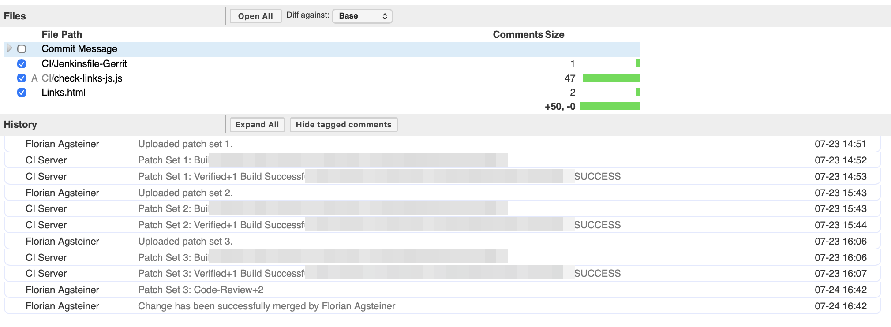

Three Interpretations of Success
I always try to follow the Boy Scout principle: leave the campsite in a better condition than you found it. It applies to software development too. If everybody does it, the source code keeps improving.
Our code review system logged three green builds on one small change. SUCCESS. SUCCESS. SUCCESS. Same word, three times — and it means something different every time. One is a failure wearing a disguise. One is the fix. And one makes sure that failure can never happen again.

Two extra lines, one extra brace
We keep a link page — a single HTML file that maps every server we run. Dozens of systems, every country, test and production, one page. When a customer gets a new system, someone adds a line.
This time, a new system was added. Two new lines, copy-pasted from the line above, addresses adjusted. I uploaded the change to Gerrit — our code review system, where every change waits for a robot check and a human approval before it's allowed in.
One of the two lines carried a typo: a closing brace too many. }} where a single } belonged.
The page depends on one big JavaScript list that builds itself. And a list with one stray brace in the middle isn't a list with one bad entry — it's not a list at all. One extra character, and the whole page stops working.
Success number one: a failure in disguise
The robot checked my change. Jenkins — the machine that builds and tests every change before a human even looks at it — ran its checks and posted its verdict to the review: SUCCESS.
The check it ran was an HTML linter, a tool that inspects the page's markup — the tags, the structure, the skeleton. The skeleton was flawless. The JavaScript inside it, the part that actually builds the page, the linter never read.
Green build, broken page.
Success number two: the fix
The typo didn't stay hidden long — I already knew I had to check it in the browser first. I traced the breakage to the stray brace and uploaded patch set 2 — in Gerrit, each revised version of a change is a new patch set. The diff: one character. }}, became },.
Jenkins posted its verdict on the fix: SUCCESS.
Same word. Same green. One of those builds carried a page that didn't work, the other one carried the cure — and standing in the history, you cannot tell them apart.
Success number three: the Boy Scout one
I could have merged right there. The page worked, the fix was in, done — and the next stray brace would sail through the same blind spot.
But I didn't. I asked myself: how could I improve the campsite?
So I handed the problem to Claude, my AI assistant, with one request: make this class of mistake impossible. It read the build pipeline, found the blind spot I already knew about — the linter checks the skeleton, nobody checks the JavaScript — and wrote a 47-line checker script. The script pulls every block of JavaScript out of the HTML file and asks Node.js — the standard engine that runs JavaScript outside a browser — to compile it. Compile, not run: the code is only checked for whether it's valid, never executed. And a small touch I didn't ask for: it pads each extracted block with blank lines so that when something breaks, the reported line number points at the real line in the original file.
The test that failed the test
To prove the checker worked, Claude did the obvious thing: took a copy of the page, injected {{ BROKEN into the middle of the list, and ran the checker on it.
The checker said: all fine.
A brand-new tool, built to catch exactly this, waving through sabotage on its first test. It looked like the checker was broken. It wasn't. {{ BROKEN is — to my surprise — valid JavaScript. Two braces in that position form a construct called a labeled block, obscure but legal. The test was wrong, not the tool. A failure disguised as a success, inside the tool built to catch successes disguised as failures.
Round two used unambiguous sabotage: a string missing its closing quote, an object missing its closing brace — my original typo's twin. The checker caught both, each with the file, the line number, and a little caret pointing at the exact spot.
Earning the right to break the build
One more step before committing, and it's my favorite one. A checker that fails other people's builds needs to be trustworthy — a check that cries wolf gets deleted within a week.
So Claude went through the git history and ran the checker against every version of the page that ever existed. Years of edits, every state the file had ever been in. Every single one passed. The file has always been valid — my brace really was the anomaly — and the checker raises no false alarms against the entire recorded life of the file it now guards.
I uploaded patch set 3: the same two lines, plus the checker and one line in the build pipeline to run it. Jenkins: SUCCESS.
Three greens, read again
That's the screenshot. Three identical green lines, one small change, one afternoon.
The first SUCCESS is a failure in disguise: the build passed and the page was broken. The second is the actual fix, wearing the exact same green as the failure. The third is the Boy Scout one: from now on, a stray brace fails the build with a line number and a caret before any human wastes a minute on it. The word on the third line finally means what it says — and it's the only one of the three that makes the other two impossible to repeat.
The change itself was two copy-pasted lines. The campsite was left in a better state.